|
Table of Contents < - - - return Chapter 23 < - - - next
World War II Story by Robert F. Gallagher Chapter 22 - Regensburg, Germany Dictators ride to and fro upon
tigers, which they dare not dismount. And the tigers are getting
hungry. _______________________ We set our gun up right next to the runway at a large
German air base located on the edge of town. We did not dig in. There were
many German planes sitting about, some were totally destroyed (See Fig. 134a
and 134b), some partially destroyed and others in near-perfect condition. A bunch
of us climbed on one of them and posed for a picture (See Fig. 135). 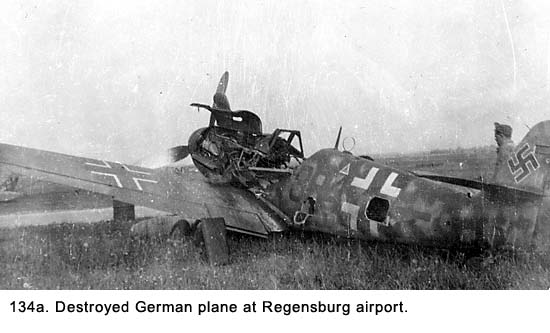 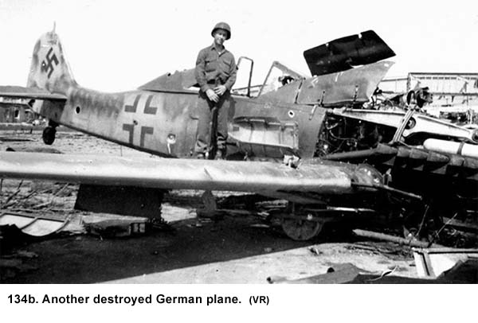 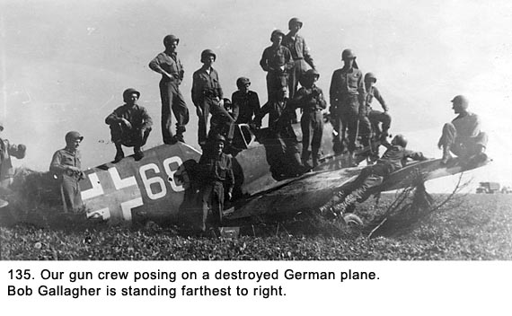 We played around with several planes, and some of the men in our battalion finally got an FW-180 to start up. At first, they were going to taxi it around, but they decided not to because it might have been dangerous. There were American C-47 transport planes landing on the airstrip on a regular basis. They were coming in to fly out American prisoners of war who had just been liberated from a camp, called a stalag, somewhere nearby. Hundreds of Allied ex-prisoners were milling about the area, and many of them looked quite emaciated. The Air Force was flying out the sickest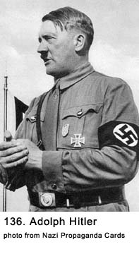 troops while the healthier ones were being taken by truck. We stayed overnight in barracks. The American engineers had fixed up one building with showers, and, after waiting in line for over an hour, we finally got our turn. On April 30th, 1945, Adolf Hitler (See Figs. 136 and 137 ) committed suicide as the Russian Army was advancing on Berlin, but we heard none of this until some time later. To us, the war was still very much alive.1 The Danube Wasn't Blue On May 1, we moved into the heart of Regensburg. We set our gun up right on the edge of the Danube River, which runs through the town in a confined concrete channel like the Main River did in Frankfurt. Our gun was set up about ten feet from the wall that defined one of the banks. We were sitting on a concrete slab, so there was no way to dig in. In fact, everything in the area was paved with concrete. After unloading both trucks, we sent a crew out to find some material suitable to fill sand bags. They found it, loaded up the bags, brought them back, and set them up around the 40mm and M-51 mount to make gun pits. The immediate area had been a loading dock for ships. About a hundred yards upstream was a large gantry crane about fifty feet high for loading ships, and behind it, away from the river, were 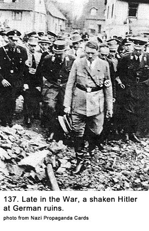 badly bombed-out storage sheds that extended for blocks. Looking downstream, a ramp led to a street perpendicular to the river. It had been the major street in that area of the city and led across the river. No one was crossing at this point, however, because the large steel truss bridge that spanned the river was half in and half out of the water. The entire upper portion of the bridge, including trusses and deck, were intact but had been knocked off their pier at one end, indicating they probably had been sabotaged by the retreating German troops rather than bombed by Allied planes. Our M-51 machine gun crew set up right in the middle of the street at the top of the ramp. They were about two hundred feet from our 40mm gun pit. Searching For Living Quarters Once we were settled in with our gun emplacement, we started to look around for a place to stay. We would not be able to pitch our two tents anywhere close, because we could not drive stakes into concrete. Considering the damage to the neighborhood and the bridge, we concluded there had been a lot of bombing in this area. The nearby buildings were all painted with camouflage colors in an overall attempt to hide the dock area. Most of them, except for the storage sheds located farther down the dock, were residential. The buildings were heavily pocked from flying projectiles and there wasn’t a pane of intact glass to be seen. Immediately inland from the gun was a two-story residential building. It seemed to be in good structural condition. We thought there were people in it but we could not be sure. There was some kind of blue/gray cloth hanging over the window frames on the inside in place of the missing glass. Spearing and I were given the assignment of seeing what could be done about occupying it while we were at this site. There was no talk about compensating the owner using billet slips like we had while in Hanau. It was important we find some place nearby to billet or we would be spending all of our off-hours in the backs of our trucks. This put a high priority on the matter and proper procedure, not to mention consideration of civilian rights, did not seem all that important. We went around to the other side of the building and up a flight of stairs to a door. We knocked, but nobody answered. Using the butts of our rifles, we knocked even harder. We could hear people inside, and I’m sure that we sounded like the Gestapo to them. Finally, a man opened the door. He was about thirty-five years old and we immediately wondered why he was still a civilian. He was scared to death. Spearing had been raised in a family with German immigrant parents and he surprised me with his linguistic skills I had no idea he possessed. He told the man “Wis Möchten Ihre Wohnungen für einige Tage benutzen.” (“We would like to use your apartment for several days.”) When Spearing told me what he had said, I told him “You’re going to have to get a lot tougher than that, Mel.” The man kept saying, “Nix Nazi; nix Nazi,” which is what all of the German civilians said when they talked to us. Spearing then said “Sie werden heraus umziehen müussen.”
(“You’re going to have to move out.”) Spearing and I were about to abandon the whole idea when the husband said something to his wife about his relatives upstairs. We went up to the second floor and knocked on that door. An elderly woman answered, and Spearing told her we had some company for her: the people downstairs. It did not seem to faze her. We went back downstairs and told the family of four “Sie haben 20 minuten zum Gehen.” (You have 20 minutes to go.”) We came back in that time and took over the apartment.
We put a ladder up to one of the windows over on the riverside to use for
ingress and egress (See Fig. 138). 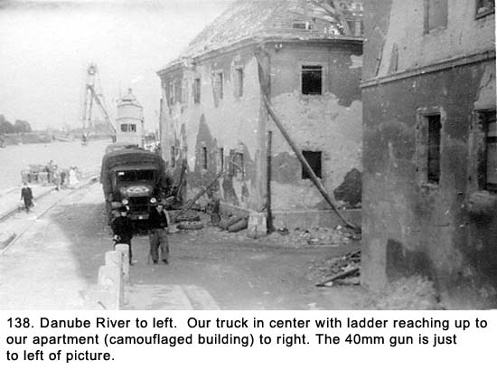 It was a typical small European apartment with a
living/dining room area, a tiny kitchen, one bedroom, and one bath (not
operational). We moved all the living/dining room furniture into the bedroom
and set up our fifteen Army cots in the main room. They abutted each other,
and nearly filled the room. To get around in some areas, we had to walk on the
wooden cot frames. We The only two windows in the apartment looked right out at our gun position next to the river. It was an ideal location for us. While looking around the apartment, we found literature, banners, and flags that all had swastikas on them. If the owner wasn’t a Nazi, he sure had all the trappings of one. We concluded, maybe to justify our consciences, that he may have been a Nazi official, which would answer the question of why he wasn’t in the armed forces. His wife was a tailor. There were bolts of army blue-gray uniform material, a sewing machine, and military insignias in a closet. They had used material from the bolts of cloth to cover the windows where all of the glass had been blown out. I picked up a stack of Nazi propaganda cards at his site (See Fig. 139, 140, 141, 142a and 142b ). The rest of the crew was ribbing Spearing and me about
evacuating the family. They would give us the Nazi salute and say, “Heil
Hitler,” when they passed us. The ribbing didn’t bother us, but our
consciences were killing us. We decided to give the family a present. Neither
Spearing nor I smoked, so we had a lot of those little four- cigarette packets
from rations saved up. We took about ten of them along with five candy bars
and put them in a little bag. We then went over to the truck and picked up a
couple boxes of 10-in-1 rations. We went to the second floor apartment and
gave them to the family. With the packages being wrapped, they did not know
what we were giving until they opened them later. 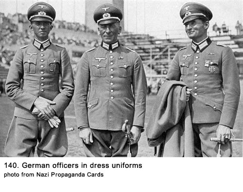 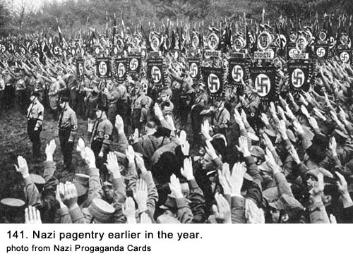 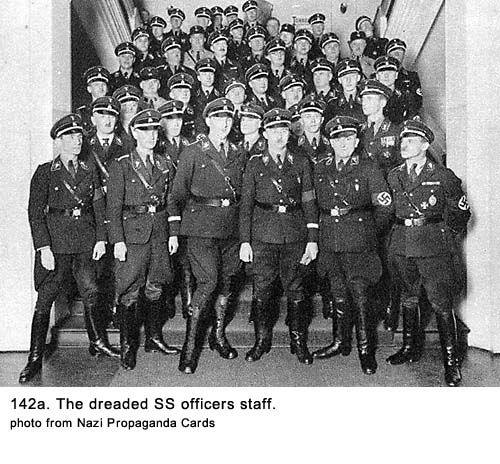 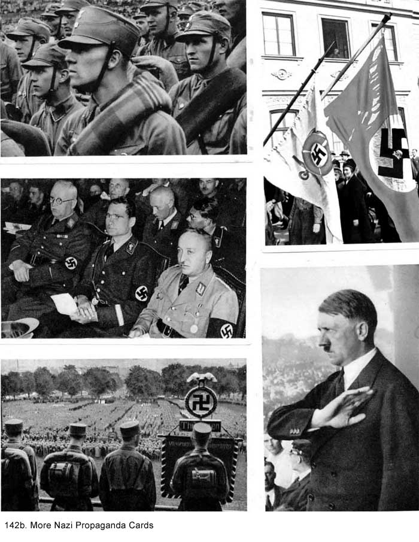 The next day, the man from upstairs came down to the gun pit with his little girl and thanked us. He was beaming from ear to ear while he chattered in German. Steve, the Polish ex-POW, was interpreting for us. We figured the civilian would have made a good (Nazi) party member because of his solicitous manner. He kept using the word kamerad, which we hated. We weren’t his comrades, and we didn’t want to be. When he overstayed his welcome, we told Steve to get rid of him, which he was more than happy to do. Later, I thought that get rid of him might have been the wrong thing to say to Steve. He could have interpreted it to mean shoot him, or dump him in the river. Whatever Steve told the German, his expression changed, and he started to head back around the corner to his new apartment. We gave the little girl some more chocolate bars before they left. Spearing and I felt a lot better about our actions but the Nazi salutes lasted until the crew found someone to tease about something else. One evening while we were at this location, I was off duty, lying on my cot. There were about six others in the room, several of them writing letters by candlelight. Bob Armbruster had gotten the candles from home when we were stationed in England. The Army did not issue them so his forward thinking was a great help to us all. Bob was always one step ahead of the rest of us in figuring out what was needed or what would be needed later to make our lives a little more livable. If you needed some soap, toothpaste, or a scissors to trim your hair, Bob could always come up with it in a hurry. He was very generous and always trying to upgrade our living standard from chaotic to livable. The candles in the room were on shelves in two small alcoves at one end of the room. Their flames, with their dim glow, were casting barely visible but eerie shadows on the other walls. There were several men fidgeting on their cots trying to get enough light to write letters home. With fifteen cots crammed together along with our duffel bags, bedrolls, blankets, rifles, helmets, gas masks, and all the rest of our gear, the tiny apartment was a real dump. The place did not look all that great when we arrived. The well-scuffed walls were discolored from age, and looked like they had not been painted or washed in many years. It was hard to distinguish whether they had been painted gray or were dirty white. There were no pictures on the walls, but perhaps the owners had taken them when they left. The room looked the worst at night. During the day, we usually moved the drapes to the side to allow some air in, but only for short periods of time. The men who had been on guard duty or manning the gun during the night were now trying to catch up on their sleep. They wanted the drapes closed to keep the room in semi darkness. From being closed up so often, the place was taking on the foul smell of body odor and dirty laundry. As hard as it is to understand today, nobody complained about the conditions because, as we did many other times in the Army, we were comparing one type of living conditions against others we experienced. Here, we had a permanent roof over our head, no mud under foot, and cots to sleep on. It was a lot better than some of the other places we had been and a hundred times better than what a lot of other GIs were experiencing. As our expectations and requirements for living conditions continued to drop to new lows, even being in an apartment we would normally consider a slum was appreciated as though it was fine living. We felt fortunate to have made such a great discovery. The only other room available in the apartment was the kitchen, and it made the living/dining room look neat. It was about ten feet square with most of the space taken up by a beat-up wooden table and four chairs. The civilians who had vacated the apartment left all kinds of debris in their haste to leave by our schedule. We soon added the clutter of C, K, and 10-in-1 ration boxes, wrappers, tin cans, and miscellaneous waste. Several of us complained about the condition of the apartment, but nobody made any effort to clean it up. Even Bob Armbruster, who was very neat in everything he did, made no effort to improve it. I think we had disappointed him while we were in the house back at St. Goar when we had refused to do KP duty to upgrade our living conditions. He had decided we were beyond salvation, and he was not going to furnish maid service to guys who lived like a bunch of slobs. One would think the less than sanitary living conditions and the minimal nourishment from eating rations would have resulted in some major health problems. I saw none of this. There were some minor problems but they did not have any lasting effects and no medical treatment was ever required. We were all thriving despite the lack of a wholesome life style. At about 2300 hours that evening I was lying on my back with my eyes closed as I was drifting off to sleep. Some of the men were sleeping, while others were still writing letters. Crews were manning the 40mm and M-51 Mount outside next to the river. Grimes was in the cot next to me, and I heard him say to Le Claire, who was across the room, “Put out that candle you goddamn frog,” (a derogatory remark for a Frenchman, used because of Le Claire’s ethnic name), “or I’ll shoot it out.” I thought he was kidding, because Le Claire was his favorite target for needling. I opened my eyes to see Grimes, in a prone position on his cot, aiming his M-1 rifle across the room. The end of the gun barrel was situated just a few inches above my eyes. At that moment, he shot the gun, which sounded more like a cannon in the small enclosed room. I got the full blast of the gasses from the end of the barrel right in my face. The pain was severe, I could not open my eyes, and thought I had been blinded. The room filled with shouting as Le Claire and every other man in the room, including me, were lacing Grimes with every curse word we knew. Grimes rolled over on his cot and pretended to be sleeping. No explanation for his action was given. Fortunately, after several hours, I began to see again, but it took twenty-four hours before my eyes were back to normal. There appeared to be no permanent injury. It was just another dumb stunt by Grimes. The morning after the incident, I still had powder marks on my face that took some hard scrubbing with soap and water to remove. The next day we were manning our gun and looking for enemy planes. All we saw were American and British ones — hundreds of them. Allied Ex-POWs Show Up As we were sitting around our gun pit, allied prisoners of war who had been recently liberated from a nearby POW camp would walk past on the dock, usually in groups of two or more. There were Americans, Polish, English, and Russian. We would say hello, and some of them would stop and talk. Usually, they requested cigarettes. Steve, our adopted ex-POW, had long conversations with his fellow countrymen from Poland. The Russians would salute us, but they would not stop and we got the impression that they had been ordered not to. They never smiled. Later, when we saw pictures of the first meeting between Russian and American forces at the Elbe River with all the hugging and toasting, we wondered what had happened in the interim to change their attitude. In the early afternoon two American ex-POWs stopped and asked if we had any food. They said they had not eaten in quite a number of hours. We said we had some rations to share and invited them into our apartment. Dillon and I sat down with them at the kitchen table and offered what we had. They were both aviators who had been shot down over Germany and captured. One was a staff sergeant who had been a gunner on a B-24 Liberator bomber. The other was a second lieutenant who had been shot down on his second bombing mission. The lieutenant seemed to have trouble communicating, and the sergeant did all of the talking for the both of them. I don’t know how the two of them matched up, because the officers and enlisted men were usually kept in separate camps. The sergeant told us what it was like to be a prisoner of war. He had been interned for well over a year and although the Germans treated him harshly, he saw no acts of cruelty. The quarters he was confined to were extremely cramped and he slept on shelves stacked three high. He said at first it wasn’t too bad and they would get an occasional Red Cross package. But as the war went against the Germans, it had a negative effect on the prisoners. They had gone from a diet of a meager amount of bread, potatoes and an occasional very small amount of meat to one dish of thin soup per day near the end of their confinement. His weight dropped more than fifty pounds, mostly in the last three months. The sergeant had worked in a German army post office, sorting packages. He and his fellow prisoners would steal cookies and other sweets out of the packages that came through their hands. They received no news about the war, but they knew the Germans were losing when the packages to the German soldiers started to get smaller. Near the end, there would be only one cookie in some of the packages. There were Russians in the camp, and the Germans gave them the lousy details. They even used a double standard of punishment by executing the Russians for minor infringements while doling out harsh but non-fatal penalties to the GIs. The sergeant told us something that happened to the lieutenant several weeks before he was liberated, when things began to get very bad for the POWs. With the Allied Armies closing in on the German territory, the Germans were required to move the American POWs held in outlying camps further into their country. During one of these moves, the lieutenant had been placed in a locked boxcar without proper ventilation. Along the route, Allied planes had strafed and bombed the train. The lieutenant had spent three days in a jam-packed car with his dead and wounded comrades, with nothing to eat or drink. It was then we knew what was making him act so strange. During the meal, such as it was, I reached across the table to grab something. The lieutenant reared back in his chair and nearly fell on the floor, reacting as if I was going to hit him. His nerves were completely shot, and he had a wild look in his eyes. He was going to need psychotherapy when he got back to the States. I apologized to him, but it did not seem to register. We gave them each a K-ration when they left. The next day Joe Bernal, Le Claire, and I decided to look around the neighborhood. We walked down the dock to the bombed-out warehouses. We went into an office, and I found a large flag, about four feet by six feet, that had flown from a cargo ship that plied the Danube River. The background of the flag was white, and there was a large black swastika in the middle, with gold stripes radiating up to the corners. It had four letters, one in each quadrant. They stood for Danube Steam Ship Company. I brought the flag home with me after the war, but it was lost some years later. We progressed inland a couple of blocks to what looked like a residential neighborhood. Solid rows of three-story apartment buildings bordered both sides of the street. There was no space between the buildings and many of them had experienced heavy bomb damage. As we looked into the buildings, on one side of the street we were amazed to see airplanes parts sitting there. We went in to get a better look. There were dozens of fuselages of ME-109 fighter planes in various stages of construction. The Germans had broken out the walls between the buildings, and were using the area as an assembly plant. They had resorted to setting up a cottage industry in a desperate attempt to continue the manufacture of munitions. There was no sign of wings, so we assumed they were made somewhere else. This was one of the desperate ways they developed to stay in production when the Allied planes bombed the regular manufacturing plants. They thought by moving into a residential area, they would be safe. Evidently, they were wrong. This also answered the question why residential buildings in this area of town were all painted with camouflage. Years later, I learned the city of Regensburg once had the country’s largest plant for manufacturing the ME-109 plane. It had been bombed and put out of commission by the Allied air force in a series of air raids. One of these raids had resulted in the loss of twenty-four out of the one-hundred-forty-six B-17, Flying Fortress bombers that took part in that raid. We went back onto the street and proceeded through the residential neighborhood where we heard noise off to our left that sounded like a crowd at a sporting event. We turned down a narrow street and had to step aside to allow a woman going in the opposite direction pass us. She was relatively small in size, and balanced on her head was a canvas bag only slightly smaller than the Volkswagen car we had seen in St.Goar. We wondered what could have been in that bag that was so light a frail woman like her could support it. Like A Scene From A Bad Movie At the end of the short street, we came to a large square filled with hundreds of people. At the opposite end of the square was a large building with a very ornate fence around it. The fence had a wrought iron gate with a crest on it, and the gate was open. The building was a winery, and it was being looted in a big way. “They were corks!” Joe exclaimed “What were corks? was my reply as I stepped out of the way of a drunken GI who almost stumbled into me. “That woman we just passed in the alley. She probably had corks in that bag. There’s nothing lighter than corks.” “Sounds right but her old man will probably shoot her for bringing home some decayed wood when it could have been a nice bottle or two of wine,” I said. There were mainly GIs, some Allied ex-POWs, and a few civilians moving about. Many of them were carrying bottles or cases of wine, and it was obvious more than a little bit of the grape had been drunk before we got there. Most of the people in sight were still drinking and were in various stages of intoxication. There was much loud talking, shouting, and an unusual show of affection with soldiers having their arms around their comrades’ shoulders. Soldiers only got that chummy when they had way too much to drink. The square had the look of a real drinking party, which was more noticeable to us because we had arrived late and were dead sober. The GIs taking the wine did not care if it was good quality or not; most of them would not know the difference anyway. They were gulping either directly from bottles or mess kit cups. The only quality criterion was, “Does it give me a buzz?” Words like clarity, full bodied, and exquisite taste were never mentioned. “I got the Jeep full so let’s get the hell out of here.” “Leon’s too drunk to walk. Come and give me a hand with him.” “I’m gonna shoot that goddamn staff (sergeant) if he gets in my way one more time.” “Don’t waste time with the bottles, just take cases.” These were the comment we were hearing. In addition to dozens of GIs carrying bottles and cases of wine, several large casks (about eight feet in diameter by ten feet long) were being rolled along the cobblestone street by GIs. One of the casks was leaking wine from one end and there were several GIs running alongside it with their mess-kit cups outstretched catching the flow. A large group from an infantry unit was laughing uproariously as they blundered through the words of Roll Out The Barrel. It was raining slightly, and the whole square looked like it was a scene from a bad “B” movie. We debated going into the winery, but decided against it. None of us cared much about drinking wine, and there were some fights starting to break out. There was nothing more dangerous than a lot of drunks who were fighting, especially when they were all carrying loaded guns. As we started to leave the square, a very drunk GI came by carrying a case of wine. As he got near us, he stumbled, and the bottles spilled out all over the cobblestone street. A few of them broke, but most did not. Each of us picked up a bottle and took off. The soldier never knew what we were doing. On our way back to our gun position, we ran into two members of our machine gun crew, Crow and Hughes, who were carrying five-gallon water cans toward the winery. My first thought was, when Hughes gets one of his buss-ons from drinking the wine, the crew will be in for some entertainment just like when he spent evenings drinking beer at the PX back in the States. The two of them were planning on filling up the cans at the winery and then taking them back to their machinegun position. When we got back to the 40mm gun, we gave our bottles to those who liked wine. Then, Wellington headed over to the winery, which was only a few blocks from out gun site, to help the other two members of the machine gun crew load the water cans. Later that day, Hughes came staggering down the ramp from the mount carrying a five-gallon can in each hand. “Got a present for ya all. Ten gallons of German red and I stomped the grapes myself,” he slurred while trying to hold back a laugh. After setting down the cans, he leaned against the gun pit sandbags to steady himself. He was ready to go into one of his comical routines but he hesitated. The look on Dillon’s face told him this wasn’t the time. Dillon blurted out with more authority than we had heard
from him in a long time, “You’d better keep at least one guy sober up there.
If there’s any kind of a raid, I don’t want you f---ing it up.” Grimes poured out half a cup of wine, took a swig, and announced “Not bad! Not bad at all!” with the faked assuredness of someone who knew what he was talking about. Dillon picked up the cans and moved them over to the building where we were billeted. On his way there and back to the gun pit he stopped and looked up the ramp at the machine gunners trying to make out what they were up to. He knew he should go up there to see firsthand but he already knew what he would find. They were all drunk and there wasn’t much he could do about it at that stage. That evening I was on guard duty from 2000 hours until midnight. The weather had turned bad early in the evening and there was a low hanging overcast. With no chance of an aerial attack in that weather, we did not have to man the gun. The rain had just stopped when I started my shift. I decided the best site to observe the area was from one of the windowsills of the apartment. The sills were about six feet above the concrete roadway and were about three feet wide so there was plenty of room. Sitting there, I could look out over my right shoulder and clearly see the 40mm gun. The moonlight, filtering through the low cloud formation, was reflecting off the rushing water of the Danube River, forming a contrasting background for the gun’s silhouette. Overall, it was fairly dark, but not so black I could not see the outlines of other objects. Looking down the river several hundred feet, I could see the bridge. The bridge itself was in fairly good condition, its tipped position made it unusable. I was facing up the ramp, and the machine gun barrels on the M-51 mount were barely outlined against the sky. I could not see the crew, but they were close enough I could hear them. They had been quite noisy earlier as the wine had done its job, but it was quiet now - too quiet. The river was making a loud rushing sound because the water was high in its confined channel from all of the rain we had been getting. The downed truss of the bridge acted as a partial spillway, adding to the noise. At the top of each hour on duty, I climbed down off of the sill and walked the fifteen yards to the telephone in the gun pit to check in with headquarters. Then I returned to the building, scaled the wall and sat back down on the sill. After each check in, I waited nervously to hear if our M-51 crew would answer and wondered what I would do if they didn’t. Crow came through each time, much to my surprise. The only sign of his condition was his elaboration on the basic information he was supposed to give. “Machine gun crew number one reporting; the best goddamn gun section in the Army,” he expounded on one occasion. No one seemed to think anything was unusual about his statement and about half of the gun crews who followed him in sequence added some self-glorification. All adjectives had a profane ring to them. Surprise While On Guard Duty At about 2330 hours, I began checking my watch frequently, because I would soon be awakening my replacement. I could not hear anyone talking inside the apartment, although the noise from the river muffled some sounds. I assumed everyone had gone to sleep. Suddenly, I heard voices talking in whispers, barely audible because it was mixed with river noise. At first, I thought it was someone inside the apartment, but I soon realized it was coming from outside. I looked down; standing directly beneath me were two men. I could have reached down and tapped them on top of their heads. It was impossible to determine what they were wearing or who they were. They were just standing there, pointing up toward the M-51 mount, and it did not take me long to realize they were speaking German. My heart about stopped. The only German civilians who were out after dark were up to no good. We had been instructed to challenge anyone we saw and shoot to kill if they fled. When I got my breath back, I started to reach for my gun. If I was going to challenge anybody, I wanted my gun in my hands. It was a .45-caliber Thompson sub machine gun that had been issued to one of our crewmembers (See Fig. 143). Because it was smaller than our rifles and had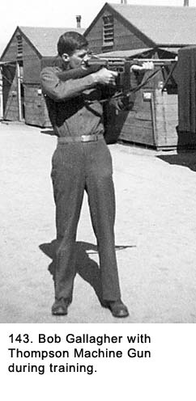 more firepower, we took turns using it on guard duty. I had put it inside the window of the apartment, setting on the floor and leaning toward the window. As I started to reach for it with my left hand, a thin line of light between the bottom of the window frame and the cloth cover told me there was at least one candle still burning inside. If I pushed the drape away from the window to get at the gun, the light would silhouette me against the cloth. I decided to wait and see if the men would move away from me before reaching for the gun. The waiting seemed like a long time, although it was probably only a couple minutes. Questions raced through my mind. Was there a round in the chamber? Where was the safety catch located? Was it on single shot or automatic fire? I hoped the two men would not look up and see me. If they did, I planned to roll into the room and then grab the gun. Finally, they moved off in the direction from which I believed they had come. I reached into the apartment and grabbed the machine gun, pulled the bolt back until it hit its limit, letting it slam forward as it picked up a cartridge from the clip and forcing a round into the firing chamber. At the same time I released the safety catch and dropped my feet so they were dangling from the windowsill. I fired. The gun was on single shot so I got off about eight rounds, pulling the trigger for each one. I was holding the gun away from me, because I was firing from my left side, and the spent shells were being ejected directly at me. The whole crew inside came awake, and we all jumped down from the two windows onto the concrete outside. There was much excitement as I explained to them what had happened. About then, we heard the distinct whirring noise of the M-51 mount’s turret being turned. The guns that had been silhouetted against the sky were no longer visible and we knew, they were now being aimed in our direction. Then, we really got nervous. We could be killed by our own crewmembers, who we knew had spent most of the evening drinking wine and were quite merry if not downright drunk. Dillon handed me his rifle and went racing up the ramp flapping his arms up and down, yelling, “Don’t shoot, don’t shoot!” After getting the machine guns pointed up in the sky again, we debated what to do next and decided to double the guard. There was no way to pursue the two men, and we never found out who they were. By the time everything calmed down, my guard duty shift was over so I went to bed with the others, although I did not sleep well that night. The next day a couple of officers showed up for an inspection. We told them about the incursion the night before, but they did not seem to know what to say about it. When we mentioned we doubled the guard after the incident, they agreed that was a good idea. As they were getting ready to leave, one of them asked for a drink of water. Crow went over to one of the five five-gallon water cans that were now all lined up against our building. He opened the lid and looked inside. He closed it fast and then did the same to the other four. The water cans had a flip type of lid to differentiate them from the screw down types used on gasoline cans. If a water can was empty, it would move around a lot when it was opened. If it was full, there was little movement. Watching Crow, we knew all but one of our cans were either full or nearly so just by the lack of movement. He finally told the officer we were out of water. The officer looked quite surprised, but he said nothing. Crow had found wine in four cans, and the other one was empty. At this gun position, we lost Steve. Bob Armbruster had
taken a picture of him with Dillon and I just before he left (See Fig. 144).
He just walked off without saying goodbye to anyone and never came back. One
of the German rifles we had was missing. I had observed him field stripping it
the day before he left. We assumed he broke it down into smaller pieces in
order to make it easier to hide because it would not have been advisable for
him to be walking around Europe with a rifle showing. He was still wearing at
least part of his Polish army uniform and could have been mistaken for a
German soldier. We never knew where he went or what happened to him, but we
figured he was headed home. He was closer to his native Poland than when he
first joined us but he still had almost two hundred miles to go just to reach
the border. We worried about him because the Russian army now occupied most of
the areas he had to go through. Even when he arrived in his native country, if
he arrived, he would find it, too, was part of their territory. Also, the
Russian army had scorched the Polish towns when the German army pushed them
back to Moscow early in the war. The Germans had done the same thing when the
Russians counterattacked some years later. There could not be much left
standing in Poland to go back to. Steve’s troubles were a long way from being
over. 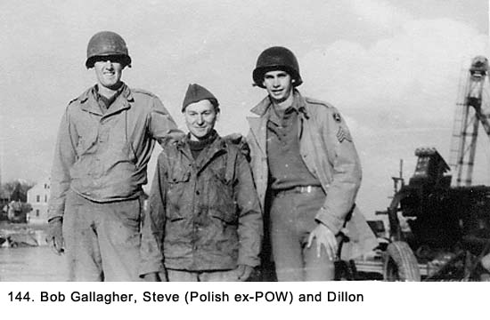 When we got word we were leaving Regensburg, we gave the family who owned the apartment more 10-in-1 rations, but not before we took out the goodies like cigarettes, candy, fruit cocktail, and date-nut bread. At this point, I think they were wishing we would stay because the father just kept smiling and gushing. Food was scarce, and there was no meat available. The 10-in-1 rations were heavy on meat and vegetable products in cans. To us, these rations were becoming more of a liability than an asset, because they took up too much room in the truck and we just did not have the proper stove or utensils to prepare the food they contained. We emptied the sand bags over the wall (See Fig. 145) into the Danube River,
loaded up our trucks, hitched the guns up to them, and got ready to move. We
drove to a location outside of town and bivouacked overnight alongside the
road. The next day we traveled to the town of Landau on the Isar River, a
tributary to the Danube River. It would be our final gun position. We had gone
farther south toward Austria. 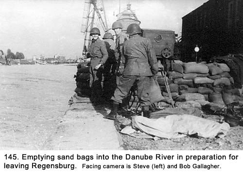
Chapter 23 < - - - next Table of Contents < - - - return _________________________ Footnotes and Source of Photographs. Copyright, Robert F.
Gallagher, 1999 - 2015, all rights reserved on all images and content.
|
 placed our bedrolls on the cots to sleep in and folded
the blankets for pillows. We would remove our boots and jackets when going to
bed but, as usual, we slept in our clothes.
placed our bedrolls on the cots to sleep in and folded
the blankets for pillows. We would remove our boots and jackets when going to
bed but, as usual, we slept in our clothes.